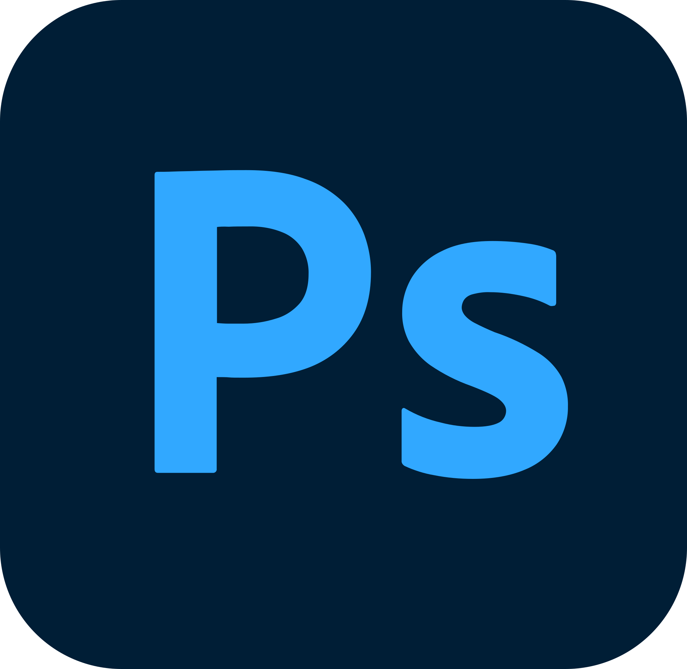
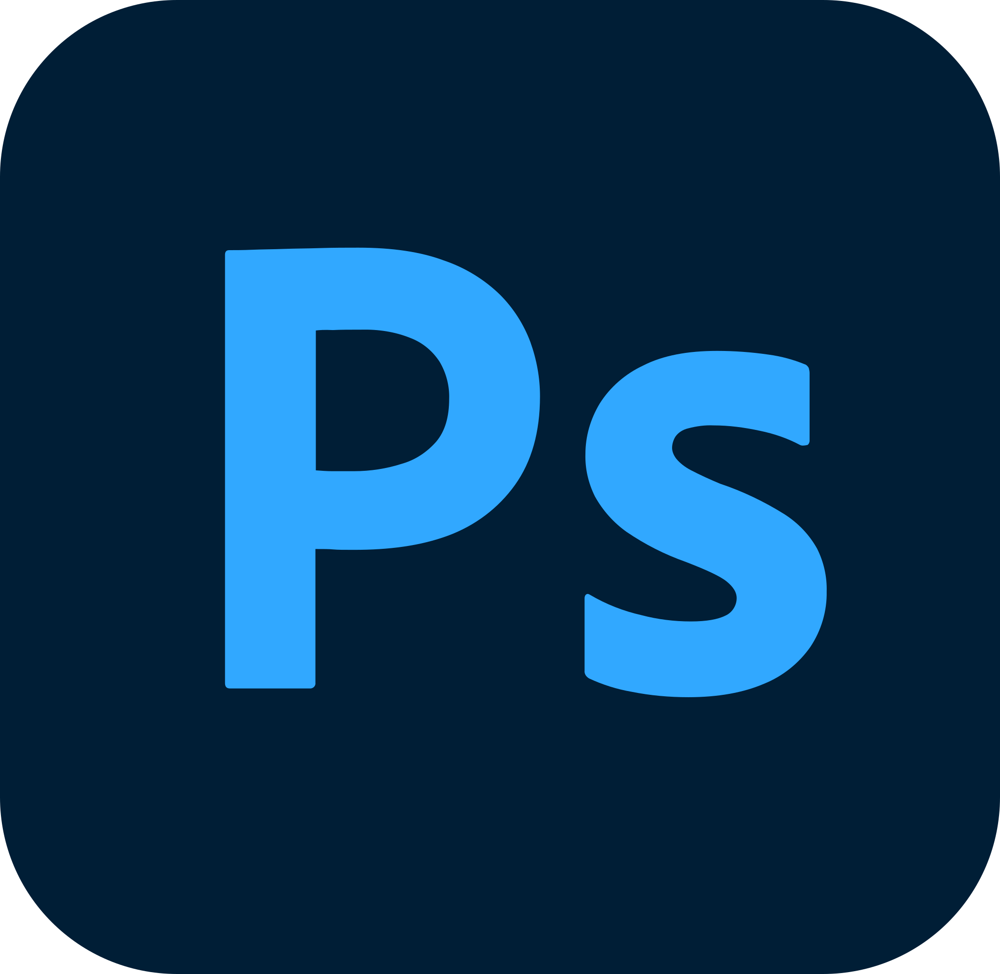

Welcome to the world of Thor's Art & Graphic Design
About Me
I am a graphic and creative designer from Hamburg with a passion for creating visually appealing content. With several years of experience in digital and print design, I thrive in collaborative environments where I can contribute innovative design solutions for branding and marketing projects. My technical expertise in Adobe Creative Suite and video editing tools, combined with a deep understanding of visual storytelling, enables me to create impactful designs that align with clients' communication strategies.
Education
- Bertolt Brecht School Schwerin
High School Diploma, 2012
- Designschule Schwerin
Communication Design, 2015
Experience
03/2016 – 09/2016 • Maxpress GmbH
At Maxpress agency, I created various print and digital materials (brochures, flyers, calendars) for different clients, ensuring the designs were visually appealing and brand-compliant.
03/2017 – 12/2020 • K16 GmbH
At K16, I created over 100+ digital presentations for B2B clients, focusing on impactful visual storytelling and clear communi- cation of complex data. I worked with multiple teams to align the designs with clients' brand guidelines and marketing goals.
07/2021 – 12/2022 • Puerta Vieja Hostal
After K16, I traveled to Mexico for over a year, where I both learned Spanish and started working as a receptionist at a hostel.
10/2021 – today • Social Media Design (Freelance)
Alongside my work at the hostel, I created visual content and managed social media campaigns for a diverse client base, optimized visuals for better engagement on platforms like Instagram, Facebook, and TikTok. I used analytics tools and SEO to improve content visibility and designed branding materials, and supported digital marketing strategies with visually appealing assets.
Skills
- Design Tools
 

- Video Editing


- Web & Social Media Tools

- Collaboration Tools

- Languages
German (Native)
English (fluent)
Spanish (Intermediate)
My Behance Portfolio